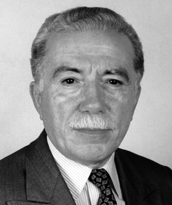

Nascido em Tocantinópolis/TO, em 18 de maio de 1940, Júlio Resplandes é advogado formado pela Universidade Federal de Goiás (UFG) e uma das poucas personalidades a ter atuado nos três poderes: Judiciário, Legislativo e Executivo.
Foi juiz de Direito em diversas cidades do Norte goiano e chegou a desembargador do Tribunal de Justiça de Goiás, presidindo também o Tribunal Regional Eleitoral (TRE). Com a criação do Tocantins, assumiu a Secretaria de Segurança Pública em 1991. Em 1998, foi eleito deputado estadual, destacando-se pela atuação parlamentar. Membro do Comitê Pró-Criação do Tocantins, teve participação efetiva no processo de emancipação do Estado. Atuou como professor da Universidade Católica de Goiás e é autor de diversas obras jurídicas e sociais.
